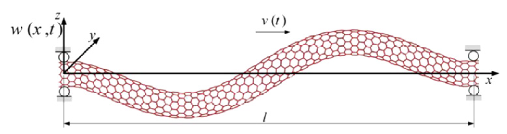

Non-linear nonlocal vibration and stability analysis of axially moving nanoscale beams with time-dependent velocity
International Journal of Mechanical Sciences, 96-97, pp.36-46, 2015. Journal Article

Abstract
The extraordinary properties of carbon nanotubes enable a variety of applications such as axially moving elements in nanoscale systems. For vibration analysis of axially moving nanoscale beams with time-dependent velocity, the small-scale effects could make considerable changes in the vibration behavior. In this research, by applying the nonlocal theory and considering small fluctuations in the axial velocity, the stability and non-linear vibrations of an axially moving nanoscale visco-elastic Rayleigh beam are studied. It is assumed that the non-linearity is geometric and is due to the axial stress changes. The energy loss in the system is considered by using the Kelvin–Voigt model. The governing higher order nonlocal equation of motion is derived by using Hamilton׳s principle and is analyzed by applying the multiple scales and power series methods. Then the non-linear resonance frequencies and response of the system are obtained. Considering the solvability condition, the stability of the system is studied parametrically through Lyapunov׳s first method. An interesting result is that, considering the small-scale effects changes the slope of the frequency response curves due to the fluctuations in the axial velocity, considerably.